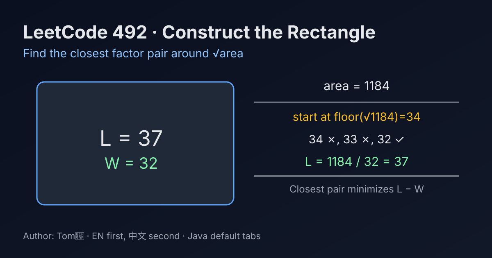

LeetCode 492: Construct the Rectangle (Closest Factor Pair from √area)
LeetCode 492MathFactorizationGreedyToday we solve LeetCode 492 - Construct the Rectangle.
Source: https://leetcode.com/problems/construct-the-rectangle/

English
Problem Summary
Given an integer area, return rectangle dimensions [L, W] such that L * W = area, L >= W, and L - W is minimized.
Key Insight
Among all factor pairs of area, the closest pair is around sqrt(area). So we start from floor(sqrt(area)) and move downward until finding a divisor.
Brute Force and Limitations
Try every W from 1 to area. This works but is far too slow for large values.
Optimal Algorithm Steps
1) Set w = floor(sqrt(area)).
2) While area % w != 0, decrement w.
3) Set l = area / w.
4) Return [l, w].
Complexity Analysis
Time: O(sqrt(area)) in the worst case.
Space: O(1).
Common Pitfalls
- Searching upward from 1 instead of downward from sqrt(area) (gives larger gap first).
- Forgetting the order requirement L >= W.
- Using floating operations carelessly without integer divisor check.
Reference Implementations (Java / Go / C++ / Python / JavaScript)
class Solution {
public int[] constructRectangle(int area) {
int w = (int) Math.sqrt(area);
while (area % w != 0) {
w--;
}
int l = area / w;
return new int[]{l, w};
}
}import "math"
func constructRectangle(area int) []int {
w := int(math.Sqrt(float64(area)))
for area%w != 0 {
w--
}
l := area / w
return []int{l, w}
}#include <vector>
#include <cmath>
using namespace std;
class Solution {
public:
vector<int> constructRectangle(int area) {
int w = (int)std::sqrt(area);
while (area % w != 0) {
--w;
}
int l = area / w;
return {l, w};
}
};class Solution:
def constructRectangle(self, area: int) -> list[int]:
w = int(area ** 0.5)
while area % w != 0:
w -= 1
l = area // w
return [l, w]var constructRectangle = function(area) {
let w = Math.floor(Math.sqrt(area));
while (area % w !== 0) {
w--;
}
const l = Math.floor(area / w);
return [l, w];
};中文
题目概述
给定整数 area，返回矩形边长 [L, W]，满足 L * W = area、L >= W，并且 L - W 尽可能小。
核心思路
因子对中“差值最小”的组合一定最靠近 sqrt(area)。所以从 floor(sqrt(area)) 往下找第一个可整除的 W，对应的 L = area / W 就是答案。
暴力解法与不足
从 1 枚举到 area 找所有因子对，能做但效率很差，没有利用对称性。
最优算法步骤
1）令 w = floor(sqrt(area))。
2）当 area % w != 0 时持续 w--。
3）令 l = area / w。
4）返回 [l, w]。
复杂度分析
时间复杂度：最坏 O(sqrt(area))。
空间复杂度：O(1)。
常见陷阱
- 从小到大找因子，容易先得到差值更大的组合。
- 忘记保证返回顺序为 L >= W。
- 用浮点计算后不做整除校验，导致边界错误。
多语言参考实现（Java / Go / C++ / Python / JavaScript）
class Solution {
public int[] constructRectangle(int area) {
int w = (int) Math.sqrt(area);
while (area % w != 0) {
w--;
}
int l = area / w;
return new int[]{l, w};
}
}import "math"
func constructRectangle(area int) []int {
w := int(math.Sqrt(float64(area)))
for area%w != 0 {
w--
}
l := area / w
return []int{l, w}
}#include <vector>
#include <cmath>
using namespace std;
class Solution {
public:
vector<int> constructRectangle(int area) {
int w = (int)std::sqrt(area);
while (area % w != 0) {
--w;
}
int l = area / w;
return {l, w};
}
};class Solution:
def constructRectangle(self, area: int) -> list[int]:
w = int(area ** 0.5)
while area % w != 0:
w -= 1
l = area // w
return [l, w]var constructRectangle = function(area) {
let w = Math.floor(Math.sqrt(area));
while (area % w !== 0) {
w--;
}
const l = Math.floor(area / w);
return [l, w];
};
Comments